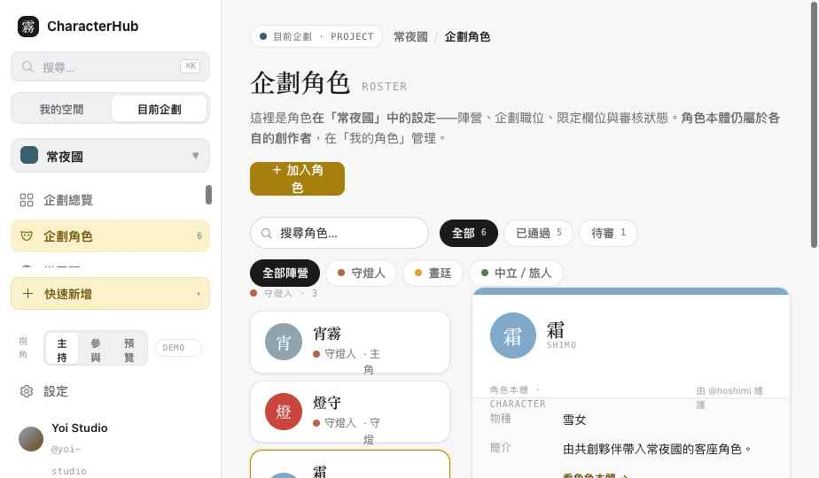
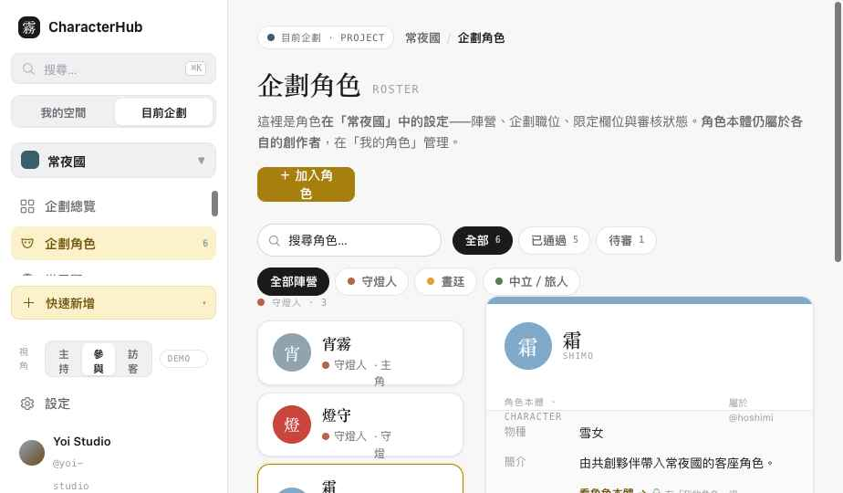
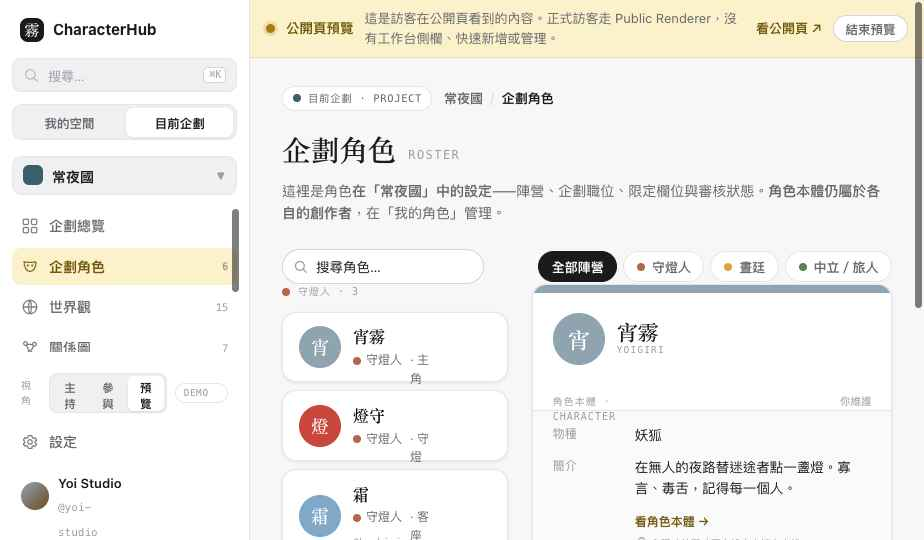

第一個 Slice 完成：App Shell（範圍切換＋權限導覽）、共用元件，以及五個核心頁面——工作台、我的角色、我的企劃、企劃總覽、企劃角色。目標是讓「我的空間 vs 目前企劃」清楚、Character 與企劃角色不混淆、Sidebar 依視角顯示。
點開任一頁直接操作。側欄左下角的 「視角」可切換 主持／參與／訪客，即時改變導覽與權限。⌘K 開啟搜尋。
同一頁「企劃角色」，側欄導覽、可用動作、詳情面板的可編輯性都隨視角改變。視角為 Demo 切換（真實情況是每個企劃的成員身分）。



統一的狀態元件（components.css/js）已實際套進頁面：載入時顯示骨架、無資料顯示 Empty、權限不足顯示 Forbidden。下方為實際渲染：
| 檔案 | 變更 |
|---|---|
| assets/shell.js / .css | App Shell v2：我的空間／目前企劃範圍切換、capability 導覽過濾、快速新增、Demo 視角切換、可捲動側欄。 |
| assets/data.js | OCData v2：viewer、視角＋capability、account 角色與 ProjectCharacterLink、factions、roster/myCharacters 等 helper。單一 mock 源。 |
| assets/components.css | 新增：Context/Page Header、Tabs、Badge/Chip、Entity Card、Filter Bar、表單、狀態區塊、Skeleton、Modal、Toast。 |
| assets/components.js | Toast / Modal / Confirm / Context Header / 狀態與骨架 builder。 |
| pages/workspace.html | 重構為帳號層工作台（不再四合一）。 |
| pages/dashboard.html | 重構為「我的角色」本體庫，顯示加入的企劃。 |
| pages/my-projects.html | 新頁：我的企劃列表。 |
| pages/overview.html | 新頁：企劃總覽（capability-gated 管理區）。 |
| pages/roster.html | 重構為企劃角色：本體 vs 企劃設定分區、master-detail、視角差異。 |
| index.html | 改為依新 IA 的原型總覽 / 啟動頁。 |
| _archive/ | 封存資料層、重複頁、預覽頁、實驗稿，附 README。 |
| 項目 | 作法 |
|---|---|
| Visitor = 公開預覽 | 視角第三項改為「公開預覽」；進入時頂部出現橫幅，明示這是公開頁預覽，正式訪客走 Public Renderer（無側欄），並提供「看公開頁」與「結束預覽」。 |
| Character 擁有權 | 主持人只能管理 ProjectCharacterLink（陣營／職位／審核／限定欄位／企劃內可見性）；不可修改參與者的角色本體（名稱／外觀／圖文設定）。詳情面板明分「角色本體（由擁有者維護）」與「此企劃中的設定（依權限）」。 |
| 資料命名同步 | viewer.projectRoles[]、fieldValues、templateVersionId、collaborationMode、ownerUserId/ownerSummary；Project 能力拆成 visibility／collaborationMode／portalEnabled／joinPolicy／submissionsEnabled／enabledFeatures 分開使用。 |
| 企劃角色 vs 角色名冊 | roster.html（企劃角色）＝工作台管理，含 pending／approved／archived 與管理操作；新增 cast.html（角色名冊）＝成員／公開瀏覽，只顯 approved、無管理。共用卡片。 |
以下動作只模擬 UI 回饋（Toast／關閉 Modal），不做正式 persistence，重新整理不保留：
點下方連結可直接驗證對應情境（含長企劃名稱）。視角用側欄左下角的「視角」切換。
響應式：側欄在 ≤860px 收成抽屜（漢堡開關），內容網格自動降欄；已針對 360 / 390 / 1024 / 1440px 與 125% 縮放設計（字級用 px、容器 max-width + auto-fill 網格、長名稱 ellipsis）。請在實際瀏覽器縮放確認；預覽工具無法真正改視窗寬度。
Slice 1.1 完成後，下一步：Slice 2 · 角色體驗
角色詳情 + 角色編輯器——優先建立 Character 本體與企劃限定設定的清楚分區、企劃版本切換、分享視圖、儲存／未儲存狀態、離開頁面提示、手機編輯／預覽切換。確認 Slice 1.1 沒問題我就接著做。